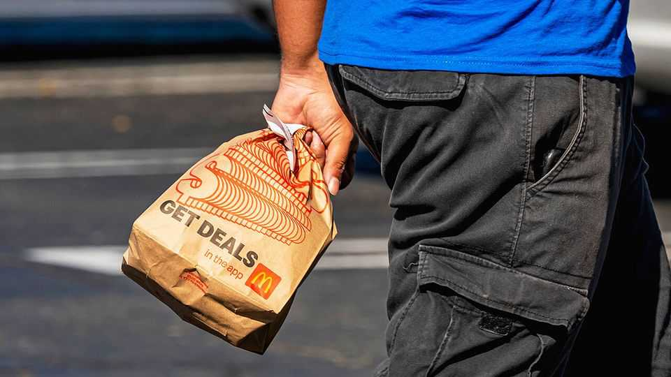

Americans are losing their appetite for fast food
McDonald’s and other chains are turning to gimmicks to lure customers back

Aug 6th 2026
Is it more difficult to run the world’s most valuable fast-food chain or to eat a burger on camera? Chris Kempczinski, the boss of McDonald’s, seems to struggle with both. A video earlier this year of him tentatively nibbling at a new burger, called the “Big Arch”, drew widespread mockery. On August 4th he unveiled that sales in America, McDonald’s biggest market, were up by a soggy 0.8% in the second quarter, year on year. The company’s share price has fallen by 12% this year.
In fairness to Mr Kempczinski, his is not the only chain struggling. In the first seven months of 2026 traffic to quick-service restaurants was down by 1.3% from the year before, notes Placer.ai, a data provider. Big price increases in recent years have caused consumers to turn to other options. High petrol prices and a recall of parasite-infected lettuce used by chains such as Taco Bell have not helped lately, nor have shifting diets. To boost sales, chains have turned to value deals and viral gimmicks. Neither are working.
For years Americans have complained about the rising cost of groceries. Their ire might be better directed at fast-food restaurants, which have increased prices by a cumulative 15-20 percentage points more than grocery stores over the past decade, points out Gregory Francfort of Guggenheim Securities, an investment bank. Low-income Americans—the core customer for most chains—have adapted by eating more at home. Convenience stores and supermarkets have also expanded their ready-meal ranges, chomping at the market. More trouble may be on the way as slimming drugs become cheaper.
One answer has been to offer limited-time discounts. In mid-2024 McDonald’s announced a $5 meal deal; this year a $3 deal followed. Yet it has struggled to get the franchisees that run nearly all its locations in America to sign on, with the chain admitting on its latest earnings call that fewer than 65% have done so.
Another strategy has been to try to whip up interest online. In February Burger King gave out the mobile number of the head of its North American business, inviting people to call or text him with their opinions. (A common gripe: the Whopper’s poor structural integrity.) Taco Bell has begun incorporating items designed by fans into its menu, such as a “California” wrap that swaps ground beef for steak and guacamole. Chains such as Burger King have also been dangling collectables, and not just in kid’s meals. Such stunts may boost business for a time, but they rarely lead to durable growth, says Mr Francfort.
Eventually fast-food chains may have to make bigger changes. For some, that will involve shaking up menus. McDonald’s for example, is looking to offer more meals based on chicken, which is much cheaper than beef and has experienced a surge in demand as health-conscious consumers seek lighter fare. The Golden Arches is also moving beyond its long-time partnership with Coca-Cola and testing other beverage options, such as Red Bull. Underperforming chains may be put up for sale. Yum! Brands, owner of KFC and Taco Bell, recently rid itself of Pizza Hut, which has been in a funk as Americans have gone off the cuisine. There are plenty of options for fast-food bosses to chew on. ■